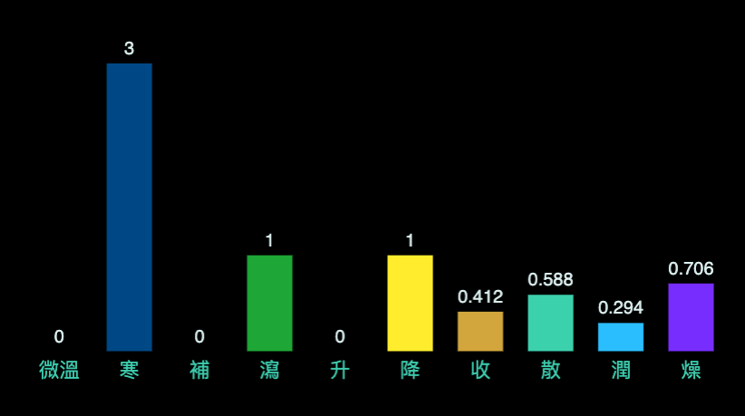

回上頁
【茵陳蒿湯】
出處
傷寒論
功用
清熱，利濕，退黃。
應用
濕熱黃疸，一身面目俱黃，色鮮明如橘子，腹微滿，口中渴，小便不利，舌苔黃膩，脈沉實或滑數。
組成
● 茵陳蒿 : 清利濕熱，利膽退黃
● 梔子 : 瀉火除煩，清熱利濕，涼血解毒
● 大黃 : 瀉下攻積，清熱瀉火，止血，解毒，活血祛瘀，清瀉濕熱
腹脹
頻尿
口渴
口苦
蕁麻疹
【組成方劑的單味藥藥性表】
-
溫熱藥
平藥
寒涼藥
補藥
平藥
瀉藥
茵陳蒿☀ ,梔子☂ ,大黃☀
-
升性藥
平藥
降性藥
散性藥
茵陳蒿☀
平藥
收性藥
梔子☂ ,大黃☀
